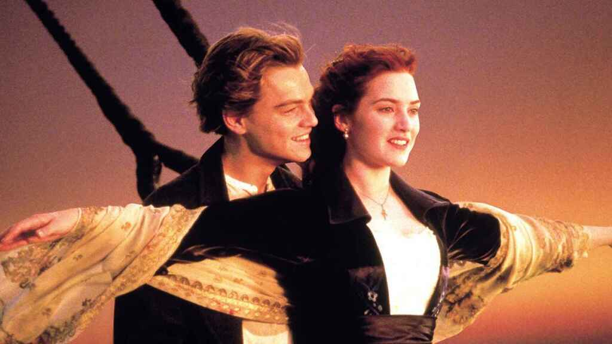

Titanic
Jack es un joven artista que gana un pasaje para viajar a América en el Titanic, el transatlántico más grande y seguro jamás construido.Es de romance y relata muy bien un acontecimiento sucedido. Las actuaciones son buenas
Regresar a la pagina principal